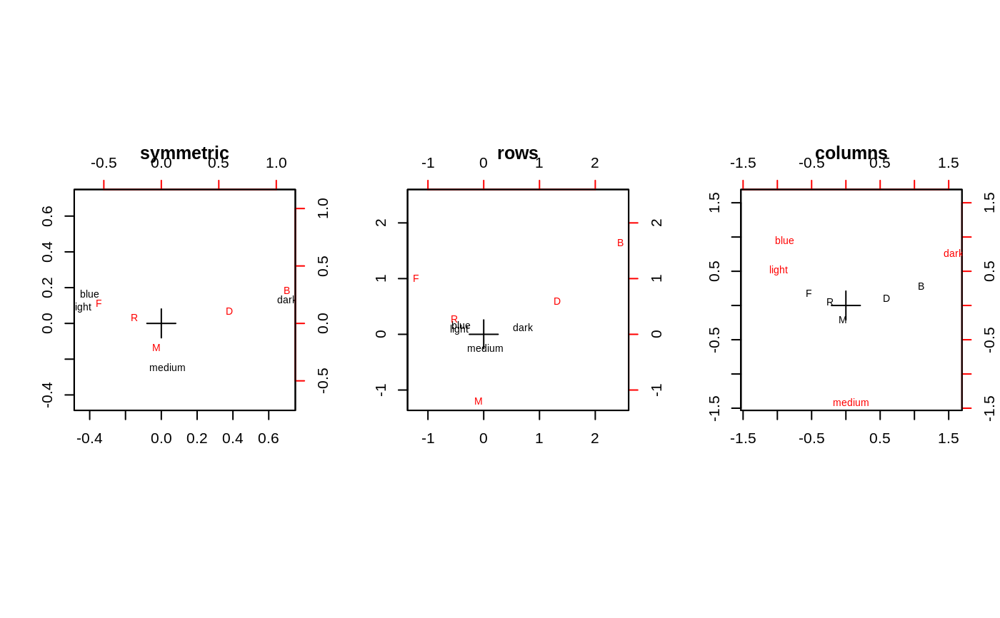

caith.RdData on the cross-classification of people in Caithness, Scotland, by eye and hair colour. The region of the UK is particularly interesting as there is a mixture of people of Nordic, Celtic and Anglo-Saxon origin.
caith
A 4 by 5 table with rows the eye colours (blue, light, medium, dark) and columns the hair colours (fair, red, medium, dark, black).
Fisher, R.A. (1940) The precision of discriminant functions. Annals of Eugenics (London) 10, 422--429.
Venables, W. N. and Ripley, B. D. (2002) Modern Applied Statistics with S. Fourth edition. Springer.
corresp(caith)#> First canonical correlation(s): 0.4463684 #> #> Row scores: #> blue light medium dark #> -0.89679252 -0.98731818 0.07530627 1.57434710 #> #> Column scores: #> fair red medium dark black #> -1.21871379 -0.52257500 -0.09414671 1.31888486 2.45176017dimnames(caith)[[2]] <- c("F", "R", "M", "D", "B") par(mfcol=c(1,3)) plot(corresp(caith, nf=2)); title("symmetric") plot(corresp(caith, nf=2), type="rows"); title("rows") plot(corresp(caith, nf=2), type="col"); title("columns")